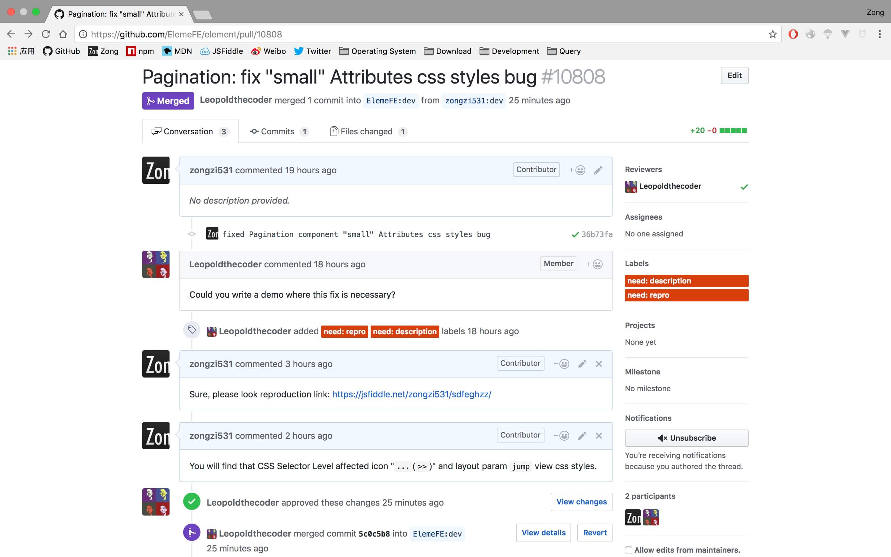

<div ref="streamContainer" class="stream-container">
    <div class="post-list-container post-list-container-shadow">
        <div class="post">
            <div class="post-head-wrapper-text-only"
                 style="background-image: url('')">
                <div class="post-title">
                    新环境 新开始
                    <div class="post-meta">
                        <time datetime="2018-04-24T21:31:33.000Z" itemprop="datePublished">
                            2018-04-24 21:31
                        </time>&nbsp;
                        
                        
                        <i class="material-icons" style="">folder</i>
                        
                        <a href='/categories/TypeScript/'>TypeScript</a>
                        
                        
    
                        
                        
                        <i class="material-icons" style="">label</i>
                        
                        <a href='/tags/JavaScript/'>JavaScript</a>, 
                        
                        <a href='/tags/TypeScript/'>TypeScript</a>, 
                        
                        <a href='/tags/ECMAScript-6/'>ECMAScript 6</a>
                        
                        
                    </div>
                </div>
            </div>
    
            <div class="post-body-wrapper">
                <div class="post-body">
                    <!-- no node -->

<span id="more"></span>

<blockquote>
<p>《你不知道的JavaScript 下卷》 =&gt; 完成</p>
<p>可以说这个月比较废（<code>忙</code>，所以决定在月底把下卷读完，当然也可能鸽一波（<code>逃</code></p>
<p>所以下一本书是《CSS世界》，不谈。</p>
<p>书债快还完了，所以《深入浅出Node.js》？TypeScript？……？（纠结中……）</p>
</blockquote>
<h2 id="TypeScript初体验"><a href="#TypeScript初体验" class="headerlink" title="TypeScript初体验"></a>TypeScript初体验</h2><p>月初利用空余时间，尝试将<a target="_blank" rel="noopener" href="https://github.com/zongzi531/react-to-do-list">react-to-do-list</a>改写成TypeScript。</p>
<p>体验<strong>接口</strong>：</p>
<pre class="line-numbers language-typescript"><code class="language-typescript"><span class="token keyword">export</span> <span class="token keyword">interface</span> <span class="token class-name">Color</span> <span class="token operator">&amp;</span>#<span class="token number">123</span><span class="token punctuation">;</span>
  color<span class="token punctuation">:</span> <span class="token keyword">string</span>
  flag<span class="token punctuation">:</span> <span class="token keyword">string</span>
<span class="token operator">&amp;</span>#<span class="token number">125</span><span class="token punctuation">;</span>

<span class="token keyword">export</span> <span class="token keyword">const</span> colors<span class="token punctuation">:</span> <span class="token keyword">Array</span><span class="token operator">&lt;</span>Color<span class="token operator">></span> <span class="token operator">=</span> <span class="token punctuation">[</span>
  <span class="token operator">&amp;</span>#<span class="token number">123</span><span class="token punctuation">;</span> color<span class="token punctuation">:</span> <span class="token string">'default'</span><span class="token punctuation">,</span> flag<span class="token punctuation">:</span> <span class="token string">'active'</span><span class="token operator">&amp;</span>#<span class="token number">125</span><span class="token punctuation">;</span><span class="token punctuation">,</span>
  <span class="token comment" spellcheck="true">// ...</span>
<span class="token punctuation">]</span>
<span aria-hidden="true" class="line-numbers-rows"><span></span><span></span><span></span><span></span><span></span><span></span><span></span><span></span><span></span></span></code></pre>
<p>编写过程中发现会很多的使用到<code>any</code>和<code>&lt;any, any&gt;</code>，尽管知道需要尽量明确类型，所以未来需要提升自己TS代码的优雅。</p>
<p>编写过程中遇到的待解决问题：</p>
<ul>
<li>[react-dnd]使用修饰器会导致代码报错，但是使用高阶组件的写法就不会。 相关issues： <a target="_blank" rel="noopener" href="https://github.com/react-dnd/react-dnd/issues/782">#782</a>  <a target="_blank" rel="noopener" href="https://github.com/react-dnd/react-dnd/issues/785">#785</a></li>
</ul>
<h2 id="体验前后端不分离开发模式"><a href="#体验前后端不分离开发模式" class="headerlink" title="体验前后端不分离开发模式"></a>体验前后端不分离开发模式</h2><ul>
<li><p>本月工作内容：</p>
<ol>
<li>参与基建开发</li>
<li>维护业务系统</li>
</ol>
</li>
<li><p>基建开发采用两套方案：</p>
<ol>
<li>jQuery + Handlebars.js</li>
<li>Vue + Element-UI</li>
</ol>
</li>
<li><p>学习一手：</p>
<ol>
<li>模板引擎：doT.js、Nunjucks</li>
<li>Node.js 框架：ThinkJS</li>
<li>树结构</li>
</ol>
</li>
</ul>
<p><strong>学习过程中能感受到前端发展至今的演变过程。</strong></p>
<p>然后故事开始了，开发过程中发现了一个element-ui css styles bug。</p>
<h2 id="The-First-Pull-Request-was-Approved-10808"><a href="#The-First-Pull-Request-was-Approved-10808" class="headerlink" title="The First Pull Request was Approved #10808"></a>The First Pull Request was Approved <a target="_blank" rel="noopener" href="https://github.com/ElemeFE/element/pull/10808">#10808</a></h2><p><span class="github-emoji" alias="tada" style="" fallback-src="https://github.githubassets.com/images/icons/emoji/unicode/1f389.png?v8">&#x1f389;</span><span class="github-emoji" alias="tada" style="" fallback-src="https://github.githubassets.com/images/icons/emoji/unicode/1f389.png?v8">&#x1f389;</span><span class="github-emoji" alias="tada" style="" fallback-src="https://github.githubassets.com/images/icons/emoji/unicode/1f389.png?v8">&#x1f389;</span></p>
<p></p>
<h2 id="先来谈谈下卷的感受"><a href="#先来谈谈下卷的感受" class="headerlink" title="先来谈谈下卷的感受"></a>先来谈谈下卷的感受</h2><p>在这里我真的要吐槽一下了，下卷真的没什么惊喜。真的是我的锅，我不应该自己先去读ES6，让我有这样的落差感。</p>
<p>当然我现在还没有读完，暂且不想后面有什么惊喜了。</p>
<blockquote>
<p><strong>weibo</strong><br>ok 没有鸽 读完下卷也写了月记 可以说这个月挺摸的 下卷这本书里写的最多的一句话：“这里不做深入介绍，可以参见本系列中的《你不知道的 JavaScript（上/中卷）》的第 N 部分” 谈谈读后感 确实这本书内容很水 但是还有些值得提到的地方的 比如元编程这个关键词 比如es6+更值得我们去关注 借助babel的力量去多使用这个样子 读完本系列上中下 确实收益匪浅 确实解惑了我不知道的JavaScript 我同时也相信还有很多我不知道的JavaScript 所以学习之路并没有停止 5月开始探索css世界 node应该会成为下一个节点 同启typescript学习 那么到5月 我的前端工作生涯也1年了 加油</p>
</blockquote>

                </div>
            </div>

            
            
            
    
            
    
            
        </div>
    </div>
    
</div>


